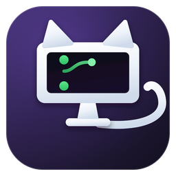
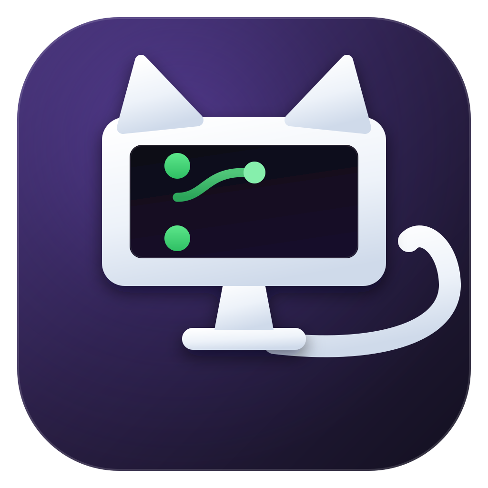

GitHub 猫 × 桌面电脑 × 代码仓库管理 · 深紫炭底 + 白色剪影 + 提交绿 · Windows 11 Fluent 圆角底板

16–32px 场景（任务栏、标题栏、资源管理器列表）切换为简化变体：加粗尾巴、放大提交点、去掉细分分支线，保证小尺寸不糊。
对比度：剪影 vs 底板 ≈ 11.8 : 1，提交绿 vs 屏幕 ≈ 8.4 : 1，均满足 WCAG AA 图形 ≥ 3 : 1 的要求；整套配色在深/浅任务栏上均有清晰边界。

| 要素 | 数值（1024 画布） |
|---|---|
| 底板圆角 | rx 214 ≈ 尺寸的 21%（Fluent 风格） |
| 屏幕主体 | 596 × 354，rx 48，居中略偏上 |
| 屏幕窗口留边 | 58（≈ 0.9px @16px，保证白框可辨） |
| 猫耳 | 底宽 156，高 128，描边圆角 26 |
| 尾巴 | 描边 46，圆头，卷曲半径约 90 |
| 提交点 | 主干 r 27 × 2，分支 r 23 × 1 |
| 安全边距 | 图形距底板边缘 ≥ 40 |
| 文件 | 说明 |
|---|---|
| octodesk.ico | Windows 安装包 / 快捷方式用，内含 256/128/64/48/32/24/16 七档（≤32 为简化变体） |
| svg/icon-master.svg | 矢量母版，≥48px 全场景使用，可无损缩放 |
| svg/icon-small.svg | 小尺寸简化变体源文件 |
| png/icon-*.png | 1024 / 512 / 256 / 128 / 64 / 48 / 32 / 24 / 16，RGBA 透明通道 |